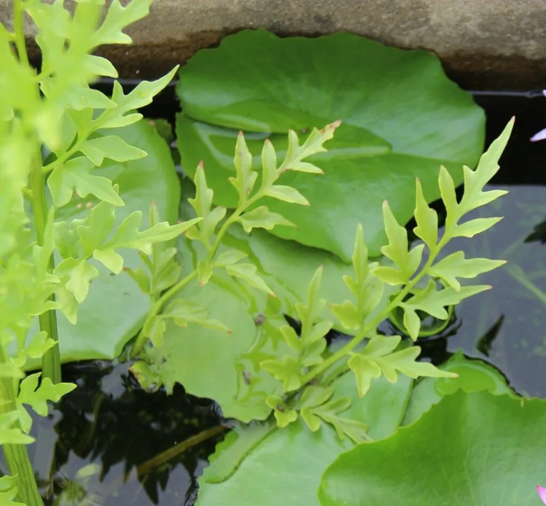

水生植物 · 植物界
水蕨 Ceratopteris thalictroides

凤尾蕨科水蕨属一年生水生蕨类，叶片二型、嫩叶可食，生于南方水田沼泽，是中国国家二级保护野生植物。
- 分类
- 门蕨类植物门纲水龙骨纲目水龙骨目科凤尾蕨科属水蕨属
- 栖息环境
- 水稻田、池塘、沼泽的浅水区与湿泥地
- 地理分布
- 亚洲、非洲及美洲热带亚热带，中国南方常见
- 保护级别
- 暂无评估；中国国家二级保护野生植物
物种志
水蕨为凤尾蕨科水蕨属的一年生水生蕨类，株高 20–50 厘米，根状茎短而直立。叶片二型：营养叶直立或漂浮，二至四回羽状深裂，裂片线形，质地柔软；孢子叶较大，羽片细长，边缘反卷形成孢子囊群。孢子囊沿叶脉着生，孢子期夏秋季。
水蕨分布于亚洲、非洲和美洲的热带、亚热带水域，中国南方水稻田、池塘和沼泽中常见，喜温暖、阳光充足和浅水环境。它的嫩叶可作蔬菜，全草可入药；由于湿地开发和环境污染，野生种群数量下降，已被列为中国国家二级保护野生植物。栽培以孢子繁殖为主，也可分株；生长期间保持浅水，避免水质污染。
形态与习性
- 株高20–50 厘米
- 叶片二型，营养叶与孢子叶不同
- 孢子孢子叶边缘反卷，形成孢子囊群
- 水深浅水至湿泥地
- 光照喜充足阳光
- 繁殖孢子繁殖为主，也可分株
- 主要用途嫩叶可食，全草入药
- 保护中国国家二级保护野生植物
趣味知识
- 水蕨的叶片分营养叶和孢子叶两种，孢子叶边缘反卷包住孢子囊。
- 它的嫩叶可作蔬菜，因此又被称为水蕨菜。
- 水蕨被列为中国国家二级保护野生植物，野生植株不宜采挖。